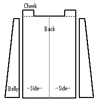
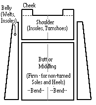

There were essentially four main types of leather available in the Middle Ages: Rawhide, (Vegetable) Tanned, (Alum) Tawed, and Oil dressed.
I have been asked to at least mention one of the, if not the most common tanning method, Chrome Tanning, otherwise people might not realize it's a modern tanning method. It has some pros and cons. In favor of it is that it is very supple, low maintenance and easy to work with, and has a really long lifespan of usage. OTOH, the chromium salts used to taw it remain in place (the light gray-green to blueish-gray stuff you can see in a cross section that makes it so easy to identify) and these can corrode and dull your scissors and knifes (a major reason not to use it for making scabbards out of, by the way), and of course it was not used in the period this work covers.
The above has pretty much referred to leather made from cattle, because cattle and calf were the dominant forms of leather used, not only in the Anglo-Scandinavian period, but from the late 13th/early 14th centuries on. During the 12th century, after the introduction of cordwain (also referred to as cordovan or cordoban), the tawed skin of the Moufflon goat, shoes were usually made from goat.. The term "Cordwainer", in fact, derived from cordwain. It is reasonable to suggest that other species of animal skin might have been used as available. For example, in one case, a 12th century horseman seems to have worn boots of oxhide. It should be noted that in 1303, the London Cordwainers Company prohibited the mixing of leather types in shoemaking.
Sole leather is often a matter of taste. Some leather stores will sell what they refer to as "sole leather", which is highly compressed and about a quarter an inch thick. It is inappropriate for making the soles of turnshoes. However, it is suitable for turn-welt and welted shoes. If it's not easily available to you, you may have to make do. If you have the good fortune of being able to work directly with a tannery, you might be able to ask them to roll a particular hide for you for greater compression. You can buy some from most leather suppliers, such as Tandy (although these may no longer be in business), the Leather Warehouse, and so on; you can use regular leather.
When you are looking at leather to buy for making shoes, you may want to consider the leather a tool rather than a material, a tool for creating an item, the ultimate criterion of which will be its performance. In effect, you're looking for good leather in a shoe in much the same way you would look for a tool made of good steel. A hide that looks good on the shelf may not be good for footwear. There are a limited number of characteristics that you will want to keep your eye on. Some examples include: stiff and dense leathers, such as those from the Bend, are really only good for a hard sole, while at a certain point, leather can be too thin for really durable shoes. If the grain on the unfinished side of the leather seems to be peeling or shedding to any extent, then a shorter period of wear is implied. While an occasional hole in the middle of the hide may be all right, two or three weak or thin spots should suggest to you that the whole hide may be weak enough to just put it back on the shelf.


Rahme, Lotta and Dag Hartman. Leather, preparation and tanning by traditional methods. Trans by David Greenebaum. The Caber Press, 1998.
Return to Contents
Footwear of the Middle Ages - Types of Leather, Copyright � 1996 I. Marc
Carlson.
This page is given for the free exchange of information, provided the author's name is
included in all future revisions, and no money change hands, other than as expressed in
the Copyright Page.